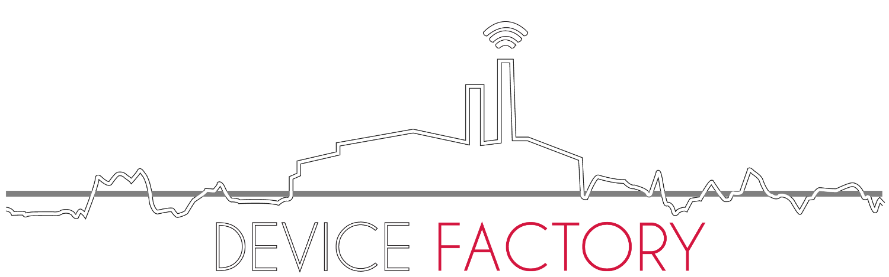

Device Factory
Created by
DeviceFactory Team
So What is Device Factory?
It is a virtual company : there is no physical "factory"
We coordinate online, often working in cafes and bars
And we make cool devices with open source
We make emphasis on working with like-minded people passionate about technology
How Did We Start?
JB’s geeky hobby
Then the idea to create a Baby Monitor
But consumer products require full-time effort
We have day jobs and would not want to have angry customers
So we focused on what we enjoy doing, and engage technical people
What Do We Make?
There are no consumer products, consumers don't care about technology
We make platforms that can be adapted to a variety of use cases
But we do sell devices to other techies as cheap as possible
The code is there so they can be hacked into you own ideas
Device Industry
New wireless technologies
Rapid prototyping services : 3D printing, PCB, even assembly
Access to low-cost manufacturing capabilities
Sensors
Press down or up to navigate.
Wireless
Cornify
Manufacturing
Low cost, lots of options